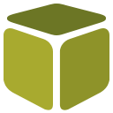

<mat-toolbar color="primary">
  <mat-toolbar-row>

    <button mat-button routerLink="/" mat-fab color="primary" aria-label="Example icon button with a home icon">
      <mat-icon>home</mat-icon>
    </button>

    <a mat-button class="docs-button" routerLink="/" aria-label="Angular Material">
      
      <span>SmartObject Tester</span>
    </a>

    <button mat-button routerLink="/demo/buttons">Demo Buttons</button>

    <button mat-button routerLink="/demo/flexbox">Flex Box</button>

    <button mat-button routerLink="/contactmanager">Contact Managmer</button>

  </mat-toolbar-row>
</mat-toolbar>